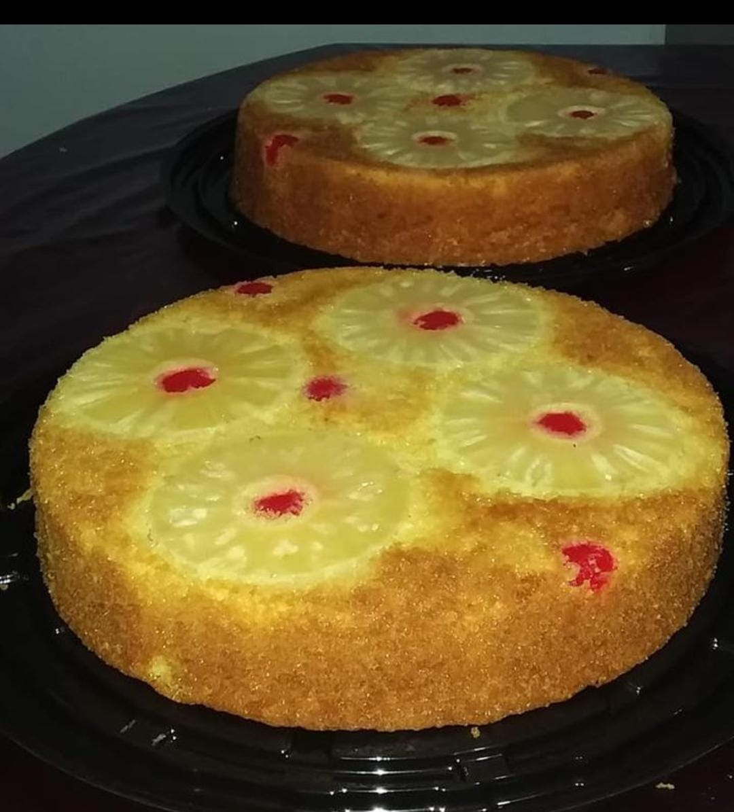

Volteado de pina

Description of the recipe
a paragraph of the recipe
Ingredients
- 300 gr mantequilla
- 2 cds. azucar
- 3 huevos
- 3 tz harina
- 1 1/2 cda polvo para horear
- 1 late leche condensada
- 8 rebanadas de pina
- cherezas
Steps
- precalentaer horno 200
- en un tazon batir la mantequilla, incorporar huevos
uno a uno y leche condensada y el azucar
- anade la harina cernida junto con el polvo de hornear
suavemente alternado con el almibar
- engrasar con suficient mantequeilla 30 cm, diametro y cubrir
en el fondo con azucar mascabado, acomodar las rebanadas de
pina y en los huecos las cerezas
- Hornear de 45 a 60 minutos y desenmoldar ensegida